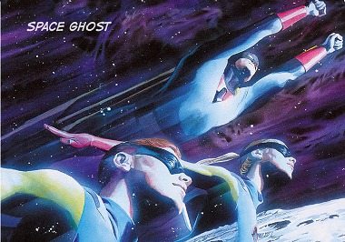

Space Ghost
Space Ghost foi o primeiro super-herói da Hannah-Barbera. Com seu quartel general localizado no Planeta Fantasma, sua nave espacial, o Cruzador Fantasma, e seus poderosos Braceletes Energéticos, Space Ghost é um patrulheiro espacial, com a missão de proteger todo um quadrante - no qual está incluída a Terra - das ameaças alienígenas.
Todos os seus poderes vêm de seu traje e dos Braceletes Energéticos. O traje permite que Space Ghost fique invisível, crie um campo de força para protegê-lo, lhe confere visão de raio-x, teletransporte, além de permitir que ele voe (mais depressa que o Cruzador Fantasma, o que nos faz perguntar por que ele precisa de uma nave), sobreviva no espaço e sob a água, e conte com um comunicador direto com os demais patrulheiros e com o Planeta Fantasma.
Os Braceletes permitem que Space Ghost dispare diversos tipos de raios diferentes, como um raio congelante, raio atordoante, raio destruidor, raio trator, e até mesmo um raio de viagem no tempo. Selecionando um tipo de raio diferente em cada mão, Space Ghost também pode disparar "raios combinados", ou multiplicar a força de um raio por 5.